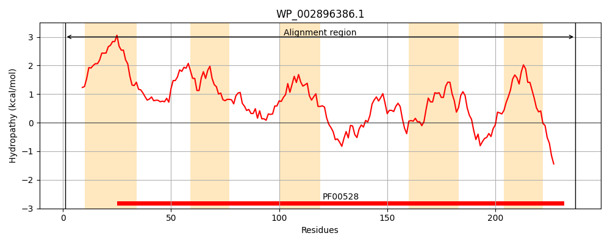
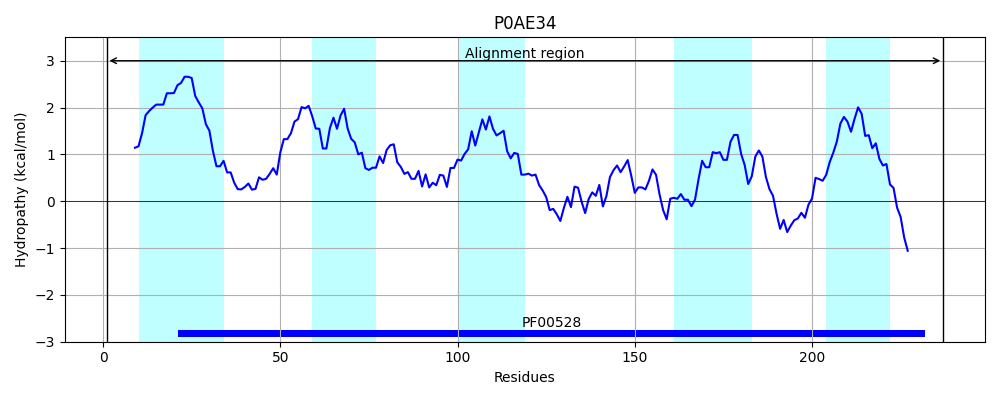
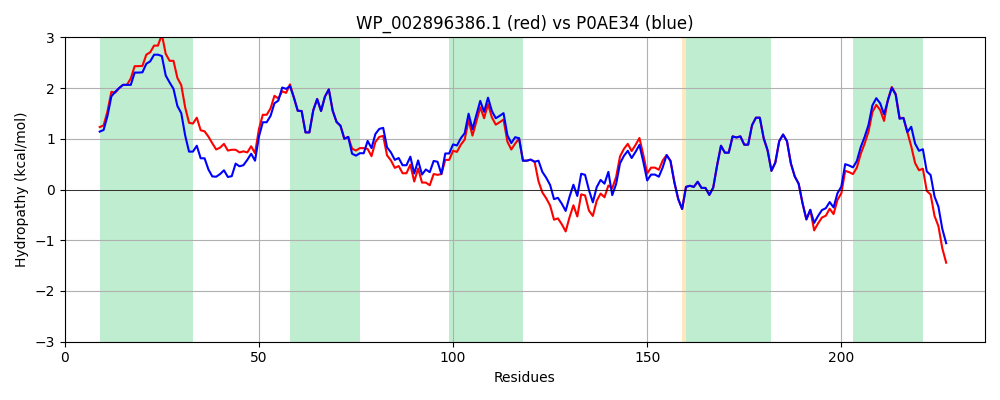

Hit Accession: P0AE34
Hit TCID: 3.A.1.3.3
Hit Description: gnl|BL_ORD_ID|8770 gnl|TC-DB|P0AE34|3.A.1.3.3 Arginine transport system permease protein artQ - Escherichia coli.
Mach Len: 237
e:0.000000
Query TMS Count : 5
Hit TMS Count: 5
TMS-Overlap Score: 5.300000
Predicted Substrates:CHEBI:2643;arginine
BLAST Alignment:
Score: 1095 , Bit scores: 426 bits, E-value: 9.3e-154, Alignment length: 237, Percentage identity: 91
Query: 1 MNEIFPLASAAGMTVGLAVCALVIGLVLAMLFAVLESVKWRPVAWLATGIVTILRGLPEILVVLFIYFGSSQLLLTLSDGFTIPLGFTQIPVQMQIENFDVSPFLCGAIALSLLYAAYASQTLRGALKAVPQGQWESGQALGLSKAAIFFRLVMPQMWRHALPGLGNQWLVLLKDTALVSLISVNDLMLQTKSIATRTQEPFNWYIIAAAIYLVITLLSQYILKRIDQRATRFERRP 237
MNE FPLASAAGMTVGLAVCAL++GL LAM FAV ES KWRPVAW + +VTILRGLPEILVVLFIYFGSSQLLLTLSDGFTI LGF QIPVQM IENFDVSPFLCG IALSLLYAAYASQTLRGALKAVP GQWESGQALGLSK+AIFFRLVMPQMWRHALPGLGNQWLVLLKDTALVSLISVNDLMLQTKSIATRTQEPF WYI+AAAIYLVITLLSQYILKRID RATRFERRP
Sbjct: 1 MNEFFPLASAAGMTVGLAVCALIVGLALAMFFAVWESAKWRPVAWAGSALVTILRGLPEILVVLFIYFGSSQLLLTLSDGFTINLGFVQIPVQMDIENFDVSPFLCGVIALSLLYAAYASQTLRGALKAVPVGQWESGQALGLSKSAIFFRLVMPQMWRHALPGLGNQWLVLLKDTALVSLISVNDLMLQTKSIATRTQEPFTWYIVAAAIYLVITLLSQYILKRIDLRATRFERRP 237 | Protein Hydropathy Plots: |
|---|
|  |  |
Pairwise Alignment-Hydropathy Plot:
|
|---|
|  |